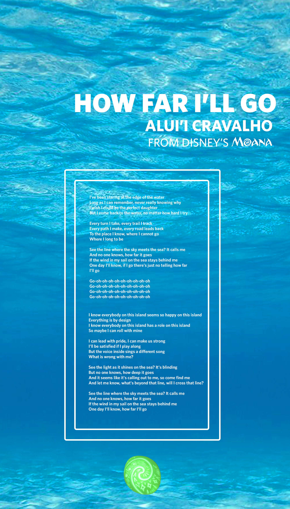
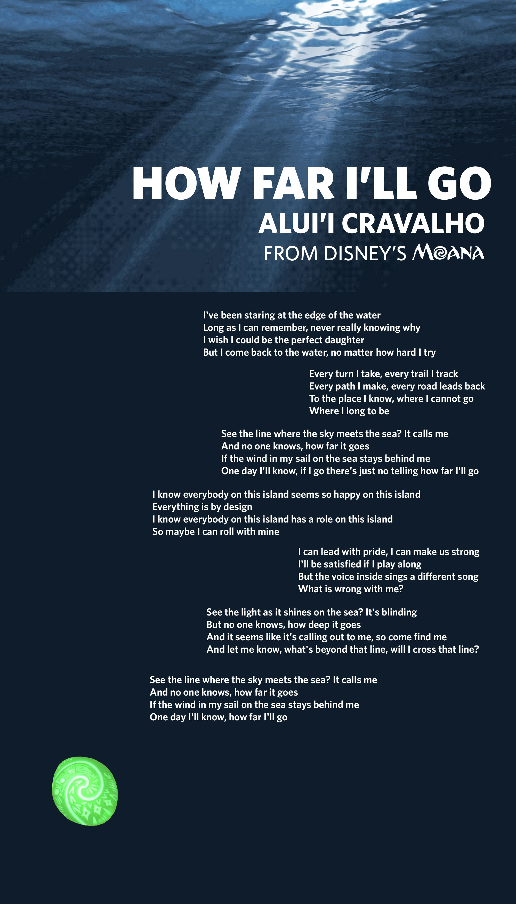

I met with Neema and Arianna to talk about my work, and decided that my background image was too low resolution, so I've switched it to a solid color. Arianna suggested using a gif of the ocean instead of a still picture, which I plan on doing. Neema suggested using a different font for the body, and I plan on using a sans from google fonts for that. She also suggested staggering the text, instead of making it a solid column. While I'm not sure that the iteration I have below is the most successful, that can be massaged more with html. Something I can't show in a jpg is my plan for the heart of tefiti (the green thing), which is that it will be a fixed object and "sink" as you scroll, as well as glow when hovered.

